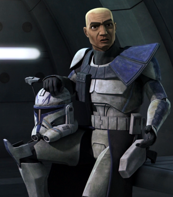
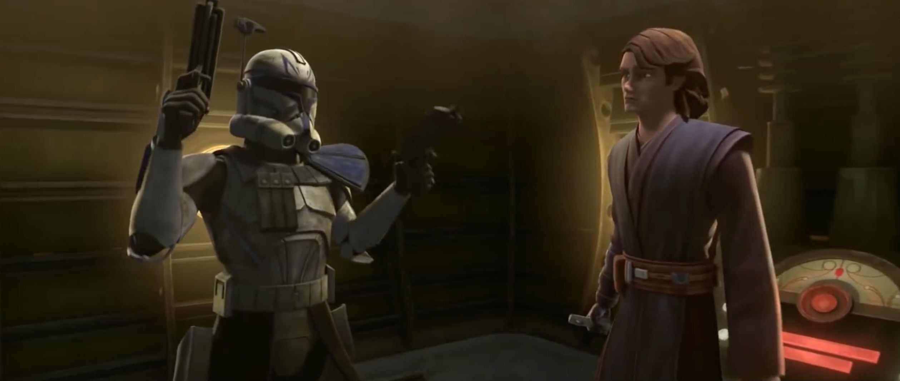
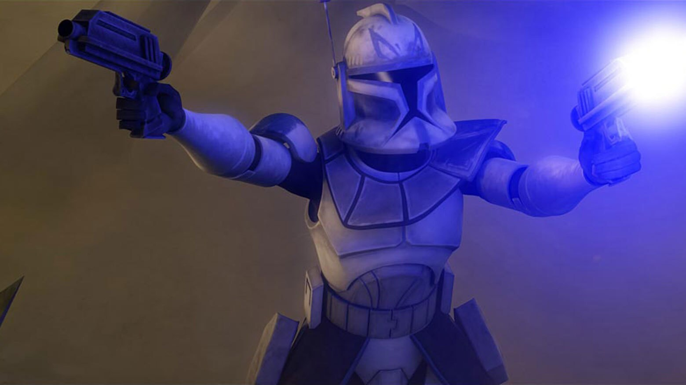
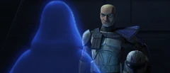
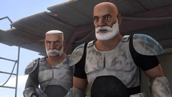
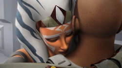

Introduction

Rex, formerly designated CT-7567, was a veteran Clone Captain, Clone Commander, and Advanced Recon Commando
who commanded the Grand Army of the Republic's famed 501st Legion of clone troopers during the Clone Wars. He served under
General Anakin Skywalker.
Relationships

As the captain of the 501st, Rex served as second-in-command to Jedi General Anakin Skywalker, whose bravery and
unconventionality in battle he came to share. In addition to being a close friend of Skywalker, he also became friends
with Skywalker's apprentice, Ahsoka Tano. He was close with Marshal Commander Cody, with their relationship mirroring
that of their respective Jedi Generals, Skywalker and Obi-Wan Kenobi, whom Rex was also well acquainted with.
Career Life

Throughout his career, Rex proved to be an effective leader who truly cared for the men under his command. An example
of this can be seen when he was forced to lead the 501st Legion under the obstinate and aggressive Jedi General Pong Krell,
who was secretly a Separatist (The bad people) agent. Rex's experiences with Krell forced him to reappraise his rigid
adherence to orders.
Order 66

When Order 66 (An order to kill all Jedi) was given out, Captain Rex was tasked to kill Ahsoka Tano(The old apprentice of
Anakin Skywalker). But remembering that the deceased clone, Fives(CT-5555), had been trying to tell him about the inhibitor
chips(A chip that was embedded in every clones brain to execute Order 66) and he was briefly able fight his programming. However,
he inevitably succumbed and shot Ahsoka. But Ahsoka was able to stun Rex and remove his inhibitor chip.
The Aftermath

After Rex and Ahsoka had escaped, Ahsoaka left her lightsaber with the deceased clones helmets and the remains of the
Star Deystroyer which crashed on a moon so that the Empire would think they were dead. After digging their "graves", the two
of them decided to part ways but both informed the other they would head into the chaos of the Outer Rim Territories.
However, they first traveled to Naboo, where Senator Padme Amidala's funeral was being held. Rex remained with the
Y-wing(stolen from the Star Deystroyer that crashed) while Tano infiltrated Theed and attended the funeral incognito.
She managed to avoid discovery and returned to Rex without incident, after which they departed the planet. After parting
ways with his former Commander(Ahsoka), Rex was able to keep a low profile due to Imperial records
listing him as having been killed in action even though Tano was presumed to have survived. Deciding to fight for what
remained of the Republic, Rex made it his mission to strike against the Empire, forming his own resistance network.
He recruited Trace and Rafa Martez—two sisters whom Tano had befriended prior to the Siege of Mandalore.

After sometime, The Rebels of Lothal were sent by Ahsoka to find Rex and his friends (Commander Wolffe and Gregor)
as several years prior to the Battle of Yavin, Tano tried to contact Rex, but her transmissions had gone unanswered
since Wolffe had hidden their existence from Rex, fearing that the Empire would come for them if they were found colluding
with a former Jedi. Later, when the rebels returned to meet Ahsoka and revealed that Rex had joined them. Rex proudly
strode forward, and Tano smiled as she walked up to him. Rex playfully joked that she had gotten old, and after
Tano smiled that it had to happen sometime, she embraced her old friend. Rex returned the hug warmly. Sadly however, Ahsoka
was killed by Darth Vader in a fight a few years later. But when Ezra Bridger (A Rebel of Lothal) found a place between all
space and time, he pulled her out at the moment Darth Vader was about to kill her meaning that she was "revived". Even after
Ahsoka died, Rex still continued fighting for the Rebels.